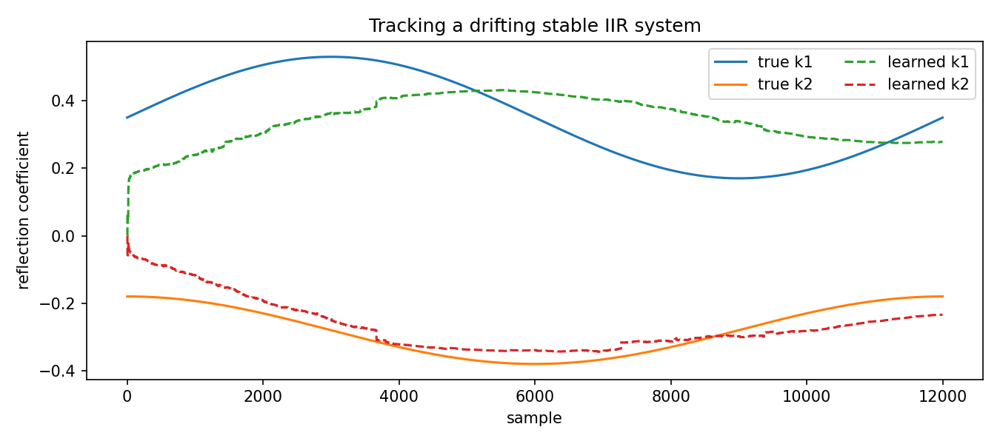

Tracking a drifting stable IIR system¶
Tutorial goal
Track a target system whose parameters slowly change over time.
Note
New to the terminology? See the lattice DSP concept map and the causality/data-use guide for how online, offline, block, and MIMO examples should be read.
Context¶
Real adaptive problems are not always stationary. This tutorial changes the target system gradually and checks whether bounded reflection adaptation can track the drift without crossing the stability boundary.
Key idea and equations¶
A useful diagnostic is the moving error power
\[\operatorname{MSE}_t = \frac{1}{W}\sum_{i=t-W+1}^{t} e_i^2.\]
How to read the result¶
The figure should show the tracking error over time. Slow drift should be followed; abrupt or very fast drift would require different tuning.
Run command¶
python examples/tracking_drifting_iir_system.py
Run status¶
Return code: 0
Captured stdout¶
true final reflection: [0.3499, -0.18]
learned final reflection: [0.278, -0.2344]
initial MSE: 0.07171581264812597
final MSE: 0.001748078090650818
minimum stability margin: 0.5686182643689661
Figures¶
{kind=link}

tracking_drifting_iir_system.png¶
Source code¶
1"""Track a slowly drifting stable IIR system.
2
3The target filter changes its reflection coefficients over time. The adaptive
4model updates numerator taps and bounded raw reflection parameters, so the
5learned denominator remains stable while tracking the drift.
6"""
7
8from __future__ import annotations
9
10import os
11from pathlib import Path
12
13import numpy as np
14
15from lattice_dsp import AdaptiveLatticeLadderNLMS, LatticeIIR
16
17
18def artifact_dir() -> Path:
19 """Return the directory for generated figures/data."""
20
21 path = Path(os.environ.get("LATTICE_DSP_ARTIFACT_DIR", "reports/example-artifacts"))
22 path.mkdir(parents=True, exist_ok=True)
23 return path
24
25
26def main() -> None:
27 rng = np.random.default_rng(21)
28 samples = 12_000
29 n = np.arange(samples)
30 x = rng.normal(size=samples)
31
32 k1 = 0.35 + 0.18 * np.sin(2.0 * np.pi * n / samples)
33 k2 = -0.28 + 0.10 * np.cos(2.0 * np.pi * n / samples)
34 true_reflection_path = np.column_stack([k1, k2])
35 numerator = [0.45, -0.1, 0.55]
36
37 target = LatticeIIR(true_reflection_path[0].tolist(), numerator)
38 adaptive = AdaptiveLatticeLadderNLMS(
39 initial_reflection=[0.0, 0.0],
40 initial_taps=[0.0, 0.0, 0.0],
41 mu_taps=0.04,
42 mu_reflection=0.001,
43 margin=1e-4,
44 reflection_update_period=4,
45 scale_reflection_mu_by_period=True,
46 )
47
48 desired = np.zeros(samples, dtype=float)
49 error = np.zeros(samples, dtype=float)
50 learned = np.zeros_like(true_reflection_path)
51
52 for i in range(samples):
53 target.set_reflection_preserve_state(true_reflection_path[i].tolist())
54 desired[i] = target.process_sample(float(x[i]))
55 _, error[i] = adaptive.adapt_sample(float(x[i]), float(desired[i]))
56 learned[i] = np.asarray(adaptive.reflection, dtype=float)
57
58 print("true final reflection:", np.round(true_reflection_path[-1], 4).tolist())
59 print("learned final reflection:", np.round(learned[-1], 4).tolist())
60 print("initial MSE:", float(np.mean(error[:1000] ** 2)))
61 print("final MSE:", float(np.mean(error[-1000:] ** 2)))
62 print("minimum stability margin:", float(1.0 - np.max(np.abs(learned))))
63
64 try:
65 import matplotlib.pyplot as plt
66 except Exception:
67 return
68
69 fig, ax = plt.subplots(figsize=(9, 4))
70 ax.plot(true_reflection_path[:, 0], label="true k1")
71 ax.plot(true_reflection_path[:, 1], label="true k2")
72 ax.plot(learned[:, 0], "--", label="learned k1")
73 ax.plot(learned[:, 1], "--", label="learned k2")
74 ax.set_title("Tracking a drifting stable IIR system")
75 ax.set_xlabel("sample")
76 ax.set_ylabel("reflection coefficient")
77 ax.legend(ncol=2)
78 fig.tight_layout()
79 out = artifact_dir() / "tracking_drifting_iir_system.png"
80 fig.savefig(out, dpi=150)
81 print(f"wrote {out}")
82
83
84if __name__ == "__main__":
85 main()